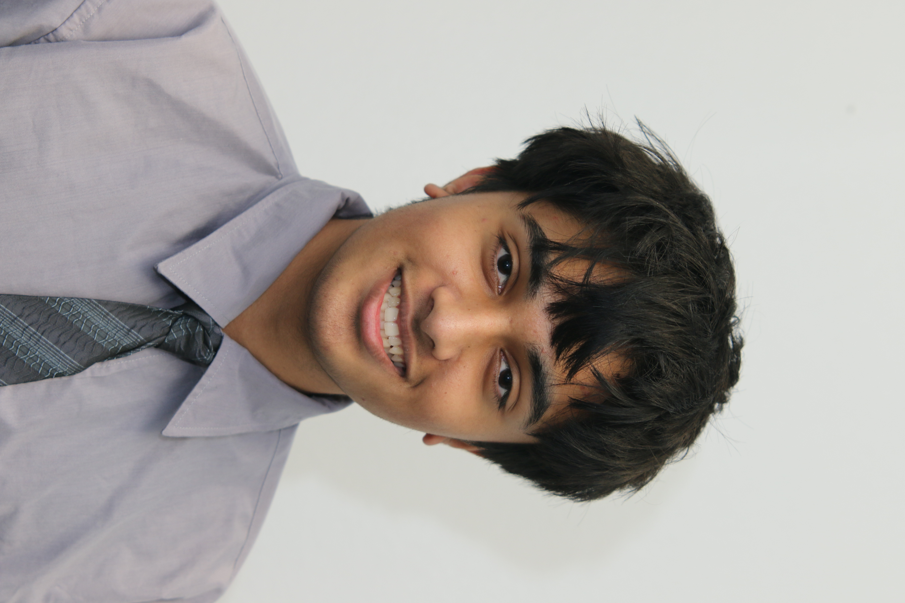

About Me
Who I am
My name is Taha Shahid — I’m a 16 year old high school junior that attends Buchanan High School and The Center for Advanced Research and Technology (CART) in Clovis, California. I was born and raised in western Canada for 14 years before I moved to Clovis the summer of freshman year. I don’ t have clear cut plans for my future, but I hope to pursue a career in engineering/tech while constantly improving my physical health and knowledge. Thanks for visiting my website today, and I hope you will enjoy learning more about me.
Hobbies
I find joy in fitness, programming/game development, playing video games, and watching shows/movies.. My days often feel incomplete unless I can get in a workout, short or long, because I enjoy improving my health. Game development has been a hobby of mine for a couple of years on and off, mainly because it is the most entertaining way of learning to program as you can see and enjoy the fruits of your labor in the game. I’ve played many games over the years, with one of my favorites being Rainbow Six Siege.

Post–Secondary Plans
I have always leaned more towards the STEM fields than I have the humanities. I believe I can narrow down my future educational goals to pursuing a degree in a field of engineering or computer science because I love dealing with technical details and creating things. Most likely, I will attend university in town, either going to Fresno State for my bachelors or attending Clovis Community College before transferring to a 4 year institution. I wouldn’t mind working for other companies, but I also find interest in the idea of becoming an entrepreneur one day.